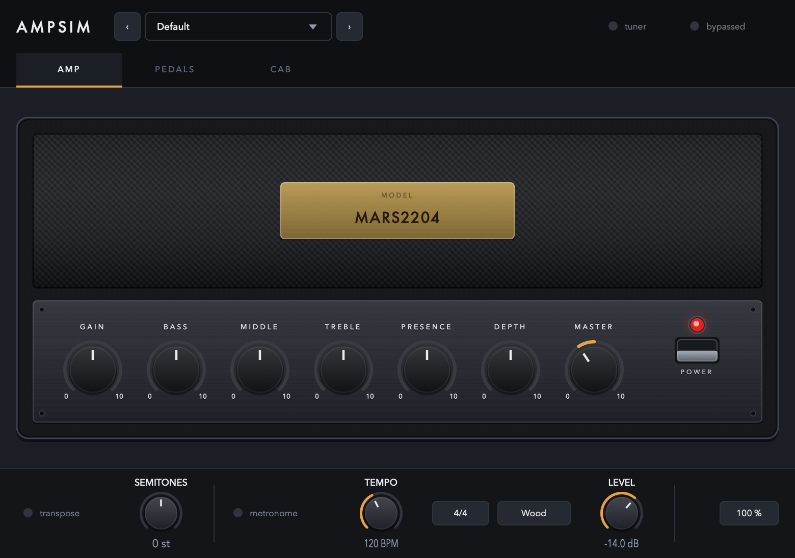

AmpSim user guide
A guitar amp, a cabinet and a pedalboard, built around a Neural Amp Modeler capture. An amp and a cab are built in, so it makes a sound the moment you open it. Start with the interface tour, then pick a walkthrough for the job at hand.
Installing
macOS, Apple silicon. The installer puts three things on your machine: an Audio Unit
and a VST3 in /Library/Audio/Plug-Ins/, and a standalone app in
/Applications. Take whichever you need.
- Open the
.pkgand follow it through. Packages are published on the releases page when there is a release to publish; otherwise build one from source —./packaging/package.shwrites both a.pkgand a.dmg. - The builds are signed ad hoc rather than with an Apple Developer ID, so the first launch is blocked: System Settings → Privacy & Security, scroll down, Open Anyway. You only do this once.
- In Logic the plugin is under MIDI-controlled effects rather than under amps, because it accepts MIDI for controller mapping.
Interface tour
Three pages under a bar that never changes. Pick a page, then click a numbered marker (or use the arrows) to see what each part does.

Walkthroughs
Starting points for common jobs. The numbers are places to begin from, not settings to copy — a capture of a real amp responds to your guitar and your pickups, so adjust by ear.
The signal chain
The order is fixed rather than something you rearrange, because the order is the design. A drive pedal in front of the amp works by changing what the amp distorts; modulation and echoes belong after it, so the repeats are of the already-distorted tone. They sit before the cabinet, so tails come out through the speaker the way they would in a real room.
The gate is the one thing not where you might expect. It listens at the very front, to your guitar before anything has touched it, and closes on the other side of the amp. A gate only in front of the amp cannot remove hiss the amp itself makes — on a high-gain capture that is nearly all of it — and a gate only behind the amp has no dynamics left to trigger on, because the distortion has flattened them. Hardware gates for high-gain rigs solve this with a key input, and this one works the same way. Its thresh control is still a level of your raw guitar, which is what makes it possible to set.
The transpose is at the very front, ahead of everything — it changes the note before any pedal or the amp sees it, which is the only place a shifter can go if the amp is to distort the shifted note rather than the shifted note being made out of distortion. The tuner taps in ahead of even that, so it reads your strings whatever the transpose is set to.
The metronome is in none of this. It is added to the output after the chain has finished, after the power switch and after the plugin's own bypass, so nothing on the panel silences it.
Everything is mono, because a guitar amp is and a NAM capture is. A stereo input is summed in at the top and the result goes back out to both channels.
Latency
The capture runs at the rate it was trained at — usually 48 kHz — and the plugin converts in and out at any other session rate, reporting about 220 samples at 44.1 kHz for your host to compensate. The drive pedal's oversampler adds 5 more, and runs whether or not the pedal is on so that the figure never changes underneath your host.
The transpose adds about 25 ms while it is engaged, and that one is not reported — it varies with where the shifter is in its cycle, so there is no single honest figure to give. Anything recorded through an engaged transpose will be late by roughly that much.
Mouse and keys
| Where | Action | Result |
|---|---|---|
| Any knob | Drag up/down or left/right | Turns it. A pedal knob shows its value in a bubble while you drag; a cab or shelf knob has its value printed under it. The amp's knobs show no number — they are marked 0 and 10 at the ends of the travel and the pointer says the rest, the way an amplifier is |
| Any knob | Double-click | Back to its default |
| Delay's sync knob | Turn fully down | Free — the time knob decides instead of the tempo |
| Any knob | Read the ring | How far it has moved from where it does nothing — the middle for a tone band, the bottom for an amount, the top for the cab's high cut |
| Any knob | Right-click | Learn a MIDI controller for it, or forget the one it has |
| Brass nameplate | Click | Opens a file chooser for a .nam capture |
| Power rocker | Click | Mutes the amp. The front of the head goes dark; the control plate stays lit |
| Pedal footswitch | Click | Switches the pedal in or out. Its LED lights green when it is in your signal |
| Cab corner | Click | Menu: load an impulse response there, or clear it |
| Preset field | Click | Menu: the saved presets, Save as…, Save over, Delete, and the presets folder |
| Preset field | ‹ › | Steps to the previous or next preset |
| Percentage in the bar | Click | Panel size: 75, 100, 125 or 150 %. Saved with the session |
| tuner | Click | Takes over the bar with the tuner and mutes the output |
| bypassed | Click | Passes your guitar straight through, untouched |
Undo stays with your host: AmpSim writes every move to a parameter, so ⌘Z in your DAW covers it.
Reading the panel
Three colours carry meaning, and nothing else on the panel uses them.
The colours of the pedal enclosures, the amp's covering and its pilot lamp are what the objects are made of, not signals — a pedal is not telling you anything by being purple. The amp's pilot lamp is the one red thing that does not mean "switched out": it is a jewel on the front of an amplifier, and it is lit when the amp is on.
A knob's ring
The ring shows the distance a control has travelled, not its absolute position. A control that rests in the middle — Bass, Middle, Treble — draws its ring outward from twelve o'clock, so you can see at a glance which way and how far you have gone. One that runs from the bottom draws from the bottom.
Questions
What is the difference between the power switch and “bypassed”?
The power switch on the amp mutes: an amp that is switched off makes no sound. bypassed in the bar takes the whole plugin out of your signal, so your guitar passes through untouched — that is the switch your host's own bypass drives. With the plugin bypassed, the power switch has no effect, because the amp is not in the chain at all.
Where do the built-in amp and cab come from, and where are they?
MARS2204 is a capture of a well-known British 100-watt head; V30 SM57 is a 4x12
close-miked on axis. They are written to
~/Library/Application Support/AmpSim/Bundled/ the first time you run AmpSim and
loaded from there. Load anything else over them at any time — the public NAM model libraries
and any cabinet impulse response work.
I loaded a different capture and the level jumped.
It should not, and that is handled: a .nam file records how loud it is, and
AmpSim brings every capture to a common reference when it loads one. Captures that do not
carry a loudness — some older files, and anything exported without it — are left alone,
because guessing would be a surprise you could not see. Those are the ones that jump.
Turning Gain up barely changes the level. Is it broken?
No — that is what an amp does. Gain sits before the model, so turning it up drives the network harder and it saturates, the way a preamp gain control does. With a real capture, 12 dB more going in yields well under a decibel more coming out; what changes is the distortion, not the volume. Master is the level control.
Why do the amp knobs read 0 to 10 and not in decibels?
Because that is how an amplifier is marked, and the controls are the amp's. Only the two ends are printed, at the ends of each knob's travel; 5 is the middle of every one of them, which is flat for a tone band and unity for Gain and Master. What each is worth in decibels is in the interface tour.
The cabinet's controls and the shelf's keep their read-outs and their units, because a cut at 100 Hz and a delay of 320 ms are measurements rather than dial positions.
If you want an exact figure on an amp control, your host's own plugin editor lists all seven and takes a typed value on the same 0–10 scale.
Why does everything sound flat with the tone knobs at 5?
Because it is flat. Bass, Middle, Treble, Presence and Depth are independent parametric bands — low shelf at 100 Hz, peak at 800 Hz, high shelf at 3.2 kHz, high shelf at 5.5 kHz and a resonant peak at 85 Hz, ±12 dB each — rather than a modelled passive tone stack. A real tone stack interacts with itself and is mid-scooped with everything at 5; this one is not, and each knob moves only its own band.
Are Presence and Depth the same as the ones on my amp?
They act where those controls act, and they do not work the way those controls work. On a real amplifier presence and depth take negative feedback off the power amp at one end of the range: the gain rises there, and the distortion and the damping change with it. A capture already contains the power amp with its feedback loop at whatever position it was captured, so two filters after it can offer the frequency response and nothing else. That is worth having — it is what you reach for those knobs to do most of the time — but it is a tone control wearing the name, not the mechanism.
I only have one impulse response. Do I need all four corners?
No. Fill one corner and the cab is a plain IR loader; the axis and distance knobs only have somewhere to go once more than one corner is filled. The grid is there for people who have a set of IRs of one cabinet captured at known mic positions.
My IRs are all at different levels.
They are handled. Captures are not made to a common level — a commercial pack can carry 15 dB of broadband gain — so the cab measures the average magnitude across the range a guitar occupies and normalises. One factor is applied to the whole grid rather than one per corner, so a corner that really is quieter (a mic backed off, or off axis) stays quieter; only the grid's overall level is brought to unity.
The tuner keeps showing a note after I stop playing.
On purpose. The reading dims but stays on screen, because a note decays long before you have finished turning the peg and a tuner that blanks between plucks is unusable. It reads your guitar before the pedals and the amp, so a fuzzy drive setting does not confuse it, and it mutes the output while it is on.
A preset changed my knobs but not my amp model. Why?
A preset holds everything — controls, MIDI map, and the paths of the model and the cabs — but anything it leaves empty keeps what is already loaded. So a preset saved with no model or cab loaded carries only the controls, and recalling it will not unload your amp. This is also what makes a preset survive a move to another machine, where your models live somewhere else.
Will the metronome end up in my recording?
Usually not. There are three cases and they behave differently:
- Recording your guitar onto an armed audio track — no. Hosts record what arrives at the track's input, ahead of its inserts, so what lands on disk is your dry signal. AmpSim's output, click included, is only what you are monitoring.
- An offline bounce or export — no. The click switches itself off whenever the host says it is rendering offline, so a mixdown never has one printed into it.
- Printing the plugin's output in real time — yes. A real-time bounce, a print or resample track fed from this one, a real-time freeze, or Reaper set to record output rather than input: all of those capture the plugin as it sounds, and the click is part of that. Switch it off first.
The rule underneath is simple: a plugin has nowhere to put a sound except its own output, so anything that records that output records the click too.
Why does 6/8 click so much faster than 6/4?
Because the tempo is the quarter note, which is what it is in every host, so the bar decides what the clicks are made of. A beat of 6/8 is an eighth note, which is half a quarter, so at the same BPM the clicks come twice as often; a beat of cut time is a half note, so they come half as often.
This is also what lets the free-running tempo and the host's grid mean the same thing — the plugin counts the host's own unit either way.
The metronome ignores my BPM setting.
That is deliberate: when your host's transport is running, the click follows the host's tempo and bar lines so it lands on the project's grid rather than drifting against it. The BPM stepper is used only when there is nothing to follow, which in practice means the standalone.
Can I reorder the pedals?
No, and that is deliberate. The placement mirrors how a real rig is plugged up and it is the point of the section rather than a limitation of it.
A new build does not show up in Logic.
Logic keeps a plugin's code loaded until it quits: quit Logic (⌘Q) and reopen the project.
Is it stereo?
No. Mono from end to end, with a stereo input summed at the top. A guitar amp is mono and so is a NAM capture; the cabinet is where stereo would begin if anything in the chain were.